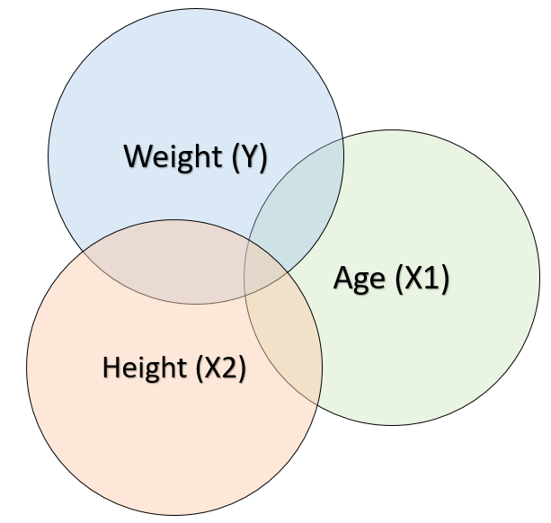

In today’s lab, we will review Multiple Regression, work with Partial and Semi-Partial Correlations, and practice significance testing for Multiple Regression.
For today’s lab, you will need to load the following libraries.
library(tidyverse)
Warning: package 'ggplot2' was built under R version 4.5.2
First, let’s read in the data and then use View() to check it out.
Today’s dataset is called data_htwtage.csv. Let’s read it in and name it mr_data (i.e., multiple regression data).
The data has 4 columns:
name: a (not-anonymous!) participant identifier
age: participant age
height: participants’ height
weight: participants’ weight
(pretty self-explanatory!)
Visualizing Relations
We should always start by looking at our data.
Scatter plot
Scatter plots allow us to visualize the relationship between two variables. Let’s create two scatter plots of the relation between our IVs and DV using ggplot().
Question: What do you notice about the strength and direction of the data?
Multiple Regression
Let’s use both age and height to predict weight.
Regress weight on age and height. Save the model to an object called model_1.
Question How do we interpret each of these regression coefficients?
Partial Regression Coefficients
The regression coefficients corresponding to the predictors in a multiple regression model are called partial regression coefficients. Let’s break down what this term means.
A new concept that gets introduced when we have multiple predictors in the regression model is redundancy, which occurs when the predictors in a multiple regression model are correlated (which they often are) and there is overlap in the variability each can account for in the outcome variable. In other words, some of the variability X1 can account for in Y is redundant with the variability X2 can account for in Y.

The partial regression coefficients that we obtain in the “Estimate” column from the summary output of our multiple regression model account for this redundancy. A partial regression coefficient is the relationship between a predictor variable (X1) and outcome variable (Y) when the relationship between X1 and the other predictor variable(s) in the model has been removed.
Let’s walk through the logic of a partial regression coefficient by re-creating the partial regression coefficient corresponding to age (\(b_1\) = 1.28) from our multiple regression model above.
Re-creating the partial regression coefficient for age
Regress age on height. Store the model in an object called model_2
Store the part of age that is unrelated to height in a new column in data called age_resid.
Regress weight on the part of age that is unrelated to height (i.e., data$age_resid). Store the model in an object called model_3.
Examine the final results using the summary() function.
Question How does the regression coefficient corresponding to the part of age that is unrelated to height in the univariate model (i.e., model_3) predicting weight compare to the regression coefficient corresponding to age in the multiple regression model (i.e., model_1)?
Partial Correlations with the {ppcor} package.
You can also use functions in the {ppcor} package to calculate semi-partial and partial correlations more quickly.
Here, we will calculate the partial correlation for age using the spcor.test function.
Significance Testing: The Model Comparison Approach
Testing the Significance of the Overall Model
A helpful way of framing the null hypothesis we want to test is using the model comparison approach. In this approach, you construct two models. One model represents what you would expect if the null hypothesis was true, and one model represents the alternative hypothesis. The model representing the alternative hypothesis includes the predictor(s) you want to test the significance of. The model representing the null hypothesis does not include these predictor(s). These predictors should be the only thing that differs between the two models.
Testing the significance of the overall model (AKA, the omnibus test), means examining whether, as a set, both age and height account for a significant amount of variation in weight scores.
We can test this by comparing two different models:
The key to the model comparison approach is comparing the amount of unaccounted for error remaining when Model 1 is used compared to when Model 2 is used. Then, we can test whether the difference in the amount of unaccounted for error remaining between the two models is significant.
Let’s run Model 1 (the intercept-only model) and see how much error is left unaccounted for. Save Model 1 to model_1.
Let me introduce a new way of looking at the output of a regression analysis, the anova() function. This function gives us the SSE (the amount of unaccounted for error remaining in Model 1).
The Sum of Squares on the residuals row corresponds to the SSE. That is, if you were to calculate the distance between each person’s actual weight and the weight predicted by the model (in this case, the mean), square those distances, and sum them up, you would get 9335.737.
Let’s run Model 2 (now including age and height) and see how much error is left unaccounted for. Save Model 2 to model_2.
Look at the residuals row again to get the SSE. The amount of unaccounted for error remaining when we use model 2 is 2120.1. An improvement from Model 1!
How much was SSE reduced by using Model 2 instead of Model 1? Save the output to a variable called ssr (i.e., sum of squares reduced).
Model Comparison in a Single Step Using the anova() function
We can give both models as arguments to the anova() function to make the model comparison in a single step and test whether the reduction in SSE is significant. Save the results of the model comparison to an object called model_comparison.
Let’s also calculate how much we reduced the amount of unaccounted for error using Model 2 compared to Model 1 as a proportion of the total amount of unaccounted for error we started with in Model 1. Save the output to a variable called per (i.e., proportion_error_reduced).
Question What does this proportional reduction in error mean?
Question What is the more familiar term for this value?
Look again at our summary output if we run our multiple regression model (i.e., model_2) and see how our results map on.
The statistics given at the bottom of the summary output correspond to a test of the significance of the overall model i.e., the omnibus test.
Significance Testing: The Model Comparison Approach
Testing the Significance of Specific Predictor(s)
We can also construct a model comparison to represent the null hypothesis we want to test to see if a specific predictor in the model is significant. Let’s do an example testing the significance of Height in our multiple regression model.
Construct Model 1 and Model 2. Store in variables labelled model_1 and model_2, respectively.
Compare the models using the anova() function. Save the results of the model comparison to an object called model_comparison.
Compute \(R^2\).
Look at summary output from Model 2 again.
There’s equivalence between what we’ve done using the model comparison approach and the t-test approach that’s used to test the significance of the specific predictors in the model in the summary output. Notice what we get if we take the square root of the F-statistic from the model comparison output.
And also notice the correspondence in the p-values.
Testing for Multicollinaerity
Question Do you think there is likely to be multicollinaerity in this dataset? Why?
Let’s identify potential problems with multicollinaerity.
First, let’s create a correlation matrix to examine potential correlations between our variables. Make sure to select only the variables that you want to examine.
Next, let’s use the easystats package to check the Tolerance and VIF (Variance Inflation Factor) in our data. Use model_2 that you created above.
Question Does it look like we have multicollinaerity in our data based on these diagnostics?
Wait, what?? Let’s calculate Tolerance and VIF “by hand.”
First, we’ll get Rj2 by predicting age from height. Call this model_3.
Next, we’ll extract the Rj2 value from the summary.
We’ll then use this to calculate the Tolerance and the VIF.
Write an APA-Style Summary
This summary is based on what is now called model_2. Don’t forget to include a confidence interval around each of your estimates!
It’s helpful to create objects with each of the relevant values first.
Now, let’s write the summary:
A multiple linear regression was conducted to examine the the effect of age and height on weight. The overall model significantly predicted weight, F(2, 16) = 27.23, p = < .001. The model explained a substantial proportion of variance in weight, with an R2 = 0.77 and an adjusted R2 = 0.74. Age was not a significant predictor of weight (\(\beta_1\) = 1.28, 95% CI[-5.31, 7.87], p .686). However, height was a significant predictor of weight (\(\beta_2\) = 3.6, 95% CI[1.68, 5.52], p < .001), indicating that for every one-unit increase in height, weight is predicted to increase by 3.6 units, holding age constant. Overall, our model predicting weight from age and height found that height was a significant predictor while age was not.